| Նշանի համարը | Նկարը | Անվանումը | ||||||
| Առավելության նշանները սահմանում են խաչմերուկներով, երթևեկելի մասերի փոխհատումներով կամ ճանապարհների նեղ հատվածներով անցման հերթականությունը | ||||||||
| 2.1 |
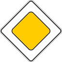 |
«Գլխավոր ճանապարհ». ճանապարհ, որով երթևեկողներին չկարգավորվող խաչմերուկների անցման առավելություն է տրվում. | ||||||
| 2.2 | «Գլխավոր ճանապարհի վերջ». | |||||||
| 2.3.1 |
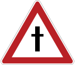 |
«Հատում երկրորդական ճանապարհի հետ». | ||||||
| 2.3.2 |
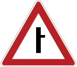 |
«Երկրորդական ճանապարհի հարում». 2.3.2, 2.3.4, 2.3.6` հարում աջից, 2.3.3, 2.3.5, 2.3.7` հարում ձախից. | ||||||
| 2.3.3 |
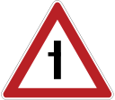 |
|||||||
| 2.3.4 |
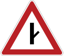 |
|||||||
| 2.3.5 |
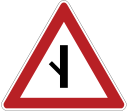 |
|||||||
| 2.3.6 |
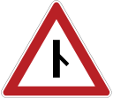 |
|||||||
| 2.3.7 | ||||||||
| 2.4 |
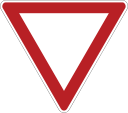 |
«Զիջեք ճանապարհը». վարորդը պետք է զիջի ճանապարհը հատող ճանապարհով, իսկ 8.13` «Գլխավոր ճանապարհի ուղղություն» ցուցանակի առկայության դեպքում` գլխավոր ճանապարհով ընթացող տրանսպորտային միջոցներին. | ||||||
| 2.5 | «Երթևեկությունն առանց կանգառի արգելվում է». արգելվում է երթևեկել առանց «Կանգ» գծից առաջ (դրա բացակայության դեպքում` հատվող երթևեկելի մասի եզրից առաջ) կանգնելու: Վարորդը պետք է զիջի ճանապարհը հատող ճանապարհով, իսկ 8.13` «Գլխավոր ճանապարհի ուղղություն» ցուցանակի առկայության դեպքում` գլխավոր ճանապարհով ընթացող տրանսպորտային միջոցներին: Եթե 2.5 նշանը տեղադրված է երկաթուղային գծանցից կամ կարանտինային պահակետից առաջ, ապա վարորդը պետք է կանգնի «Կանգ» գծից առաջ, իսկ դրա բացակայության դեպքում` նշանից առաջ. | |||||||
| 2.6 |
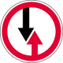 |
«Հանդիպակաց երթևեկության առավելություն». արգելվում է մուտք գործել ճանապարհի նեղ հատված, եթե դա կարող է դժվարացնել հանդիպակաց երթևեկությունը: Վարորդը պետք է ճանապարհը զիջի նեղ հատվածին հանդիպակաց կողմից մոտեցող տրանսպորտային միջոցներին. | ||||||
| 2.7 |
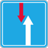 |
«Առավելություն հանդիպակաց երթևեկության նկատմամբ». ճանապարհի նեղ հատված, որով երթևեկելիս վարորդն առավելություն ունի հանդիպակաց տրանսպորտային միջոցների նկատմամբ: | ||||||
| Նշանի համարը | Նկարը | Անվանումը | ||||||
| Արգելող նշանները մտցնում կամ վերացնում են երթևեկության որոշակի սահմանափակումներ | ||||||||
| 3.1 | 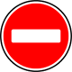 |
«Մուտքն արգելվում է». արգելվում է տրանսպորտային միջոցների մուտքը տվյալ ուղղությամբ. | ||||||
| 3.2 | «Երթևեկությունն արգելվում է». արգելվում է բոլոր տրանսպորտային միջոցների երթևեկությունը. | |||||||
| 3.3 | 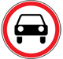 |
«Մեխանիկական տրանսպորտային միջոցների երթևեկությունն արգելվում է». | ||||||
| 3.4 | 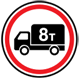 |
«Բեռնատար ավտոմոբիլների երթևեկությունն արգելվում է». արգելվում է 3.5 տոննայից ավելի (եթե նշանի վրա զանգվածը չի նշված) կամ նշանի վրա նշվածից մեծ թույլատրելի առավելագույն զանգված ունեցող բեռնատար ավտոմոբիլների և տրանսպորտային միջոցների շարժակազմերի, ինչպես նաև տրակտորների և ինքնագնաց մեքենաների երթևեկությունը. | ||||||
| 3.5 | 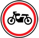 |
«Մոտոցիկլների երթևեկությունն արգելվում է». | ||||||
| 3.6 | 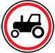 |
«Տրակտորների երթևեկությունն արգելվում է». արգելվում է տրակտորների և ինքնագնաց մեքենաների երթևեկությունը. | ||||||
| 3.7 | «Կցորդով երթևեկությունն արգելվում է». արգելվում է ցանկացած տեսակի կցորդով բեռնատար ավտոմոբիլների և տրակտորների երթևեկությունը, ինչպես նաև մեխանիկական տրանսպորտային միջոցների քարշակումը. | |||||||
| 3.8 | «Լծասայլերի երթևեկությունն արգելվում է». արգելվում է լծասայլերի (լծասահնակների), հեծկան կամ բեռնակիր կենդանիներով երթևեկությունը և անասուններ քշելը. | |||||||
| 3.9 | «Հեծանիվներով երթևեկությունն արգելվում է». արգելվում է մոպեդներով և հեծանիվներով երթևեկությունը. | |||||||
| 3.10 | «Հետիոտների տեղաշարժն արգելվում է». | |||||||
| 3.11 | «Զանգվածի սահմանափակում». արգելվում է այն տրանսպորտային միջոցների (այդ թվում` ավտոգնացքների) երթևեկությունը, որոնց ընդհանուր փաստացի զանգվածը մեծ է նշանի վրա նշվածից. | |||||||
| 3.12 | «Սռնու վրա բեռնվածության սահմանափակում». արգելվում է այն տրանսպորտային միջոցների երթևեկությունը, որոնց որևէ սռնու վրա բեռնվածությունը մեծ է նշանի վրա նշվածից. | |||||||
| 3.13 | «Բարձրության սահմանափակում». արգելվում է այն տրանսպորտային միջոցների երթևեկությունը, որոնց եզրաչափային բարձրությունը (բեռով կամ առանց բեռի) ավելի է նշանի վրա նշվածից. | |||||||
| 3.14 | «Լայնության սահմանափակում». արգելվում է այն տրանսպորտային միջոցների երթևեկությունը, որոնց եզրաչափային լայնությունը (բեռով կամ առանց բեռի) ավելի է նշանի վրա նշվածից. | |||||||
| 3.15 | «Երկարության սահմանափակում». արգելվում է այն տրանսպորտային միջոցների (այդ թվում` ավտոգնացքների) երթևեկությունը, որոնց եզրաչափային երկարությունը (բեռով կամ առանց բեռի) ավելի է նշանի վրա նշվածից. | |||||||
| 3.16 | «Նվազագույն միջտարածության սահմանափակում». արգելվում է տրանսպորտային միջոցների երթևեկությունը, եթե դրանց միջև տարածությունը փոքր է նշանի վրա նշվածից. | |||||||
| 3.17.1 | «Մաքսային կետ». արգելվում է առանց կանգառի անցումը մաքսային կետի մոտով. | |||||||
| 3.17.2 | «Վտանգ». արգելվում է բոլոր տրանսպորտային միջոցների հետագա երթևեկությունը ճանապարհատրանսպորտային պատահարի, հրդեհի, վթարի և այլ վտանգի կապակցությամբ, բացառությամբ ոստիկանության, շտապ բժշկական օգնության, փրկարարական և վտանգի վերացման նպատակով ժամանած այլ ծառայությունների տրանսպորտային միջոցների, երթևեկությունը շարունակել կարելի է միայն թույլտվություն ստանալուց հետո. | |||||||
| 3.17.3 | «Հսկիչ կետ». արգելվում է առանց կանգառի անցումը հսկիչ կետով. | |||||||
| 3.18.1 | «Աջ շրջադարձն արգելվում է». | |||||||
| 3.18.2 | «Ձախ շրջադարձն արգելվում է». | |||||||
| 3.19 | «Հետադարձն արգելվում է». | |||||||
| 3.20 | «Վազանցն արգելվում է». արգելվում է բոլոր տեսակի տրանսպորտային միջոցներով վազանցի կատարումը: Թույլատրվում է վազանցել դանդաղընթաց տրանսպորտային միջոցները, լծասայլերը, առանց կողային կցորդի երկանիվ մոտոցիկլները, մոպեդները և հեծանիվները. | |||||||
| 3.21 | «Վազանցի արգելման գոտու վերջ». | |||||||
| 3.22 | «Բեռնատար ավտոմոբիլներով վազանցն արգելվում է». բոլոր տեսակի տրանսպորտային միջոցներով վազանցն արգելվում է` բացառությամբ մոտոցիկլների, թեթև մարդատար ավտոմոբիլների, ավտոբուսների և մինչև 3,5 տոննա թույլատրելի առավելագույն զանգված ունեցող բեռնատար ավտոմոբիլների. | |||||||
| 3.23 | «Բեռնատար ավտոմոբիլներով վազանցի արգելման գոտու վերջ». | |||||||
| 3.24 | «Առավելագույն արագության սահմանափակում». | |||||||
| 3.25 | «Առավելագույն արագության սահմանափակման գոտու վերջ». | |||||||
| 3.26 | «Ձայնային ազդանշան տալն արգելվում է». արգելվում է օգտվել ձայնային ազդանշաններից` բացի այն դեպքերից, երբ այն տրվում է ճանապարհատրանսպորտային պատահար կանխելու համար. | |||||||
| 3.27 | «Կանգառն արգելվում է». արգելվում են տրանսպորտային միջոցների կանգառն ու կայանումը. | |||||||
| 3.28 | «Կայանելն արգելվում է». արգելվում է տրանսպորտային միջոցների կայանումը. | |||||||
| 3.29 | «Կայանելն արգելվում է ամսվա կենտ օրերին». | |||||||
| 3.30 | «Կայանելն արգելվում է ամսվա զույգ օրերին». 3.29 և 3.30 նշանների միաժամանակյա կիրառման դեպքում տրանսպորտային միջոցները ճանապարհի մի կողմից մյուսը տեղափոխվում են ժամը 19.00 - 21.00-ի սահմաններում. | |||||||
| 3.31 | «Բոլոր սահմանափակումների գոտու վերջ». նշում է 3.16, 3.20, 3.22, 3.24 և 3.26 - 3.30 նշաններից մի քանիսի ազդման գոտիների միաժամանակյա վերջը. | |||||||
| 3.32 | «Վտանգավոր բեռներով տրանսպորտային միջոցների երթևեկությունն արգելվում է». արգելվում է այն տրանսպորտային միջոցների երթևեկությունը, որոնք կահավորված են «Վտանգավոր բեռ» ճանաչման նշանով. | |||||||
| 3.33 | «Պայթուցիկ և դյուրավառ բեռներով տրանսպորտային միջոցների երթևեկությունն արգելվում է». արգելվում է այն տրանսպորտային միջոցների երթևեկությունը, որոնք կահավորված են «Վտանգավոր բեռ» ճանաչման նշանով և նախատեսված են 1, 2.2 - 2.4, 3.1, 3.2 և 5.2 դասերի վտանգավոր բեռներ փոխադրելու համար (ըստ ստանդարտի). | |||||||
| 3.34 |

|
Խաչմերուկի տարածք | ||||||
| 3.34 Արգելում է մուտք գործել խաչմերուկի տարածք, եթե առջևում՝ երթևեկության ուղղությամբ առաջացել է խցանում, բացառությամբ աջ կամ ձախ շրջադարձ կատարելու դեպքերի։ Բարդ խաչմերուկներում «խաչմերուկի տարածք» ճանապարհային նշանը, եթե այն հնարավոր չէ տեղադրել խաչմերուկի սահմանին, տեղադրվում է առավելագույնը 30մ հեռավորության վրա | ||||||||
| 3.2 - 3.9, 3.32 և 3.33 նշանները երկու ուղղությամբ էլ արգելում են համապատասխան տեսակների տրանսպորտային միջոցների երթևեկությունը: | ||||||||
|
Նշանների ազդեցությունը չի տարածվում` 3.1 - 3.3, 3.18.1, 3.18.2, 3.19` ընդհանուր օգտագործման տրանսպորտային միջոցների վրա. նշանները երկու ուղղությամբ էլ արգելում են համապատասխան տեսակների տրանսպորտային միջոցների երթևեկությունը: 3.2 - 3.8` «տաքսի» ավտոմոբիլների, ճանապարհների շինարարության, վերանորոգման, պահպանման կամ մաքրման, ճանապարհային երթևեկության կազմակերպման տեխնիկական միջոցների սպասարկման և նորոգման, անսարք, վթարված և այլ տրանսպորտային միջոցների բարձման ու փոխադրման աշխատանքներ իրականացնող, ինչպես նաև գունագծապատկերներ ունեցող փոստային հատուկ կապի և այն տրանսպորտային միջոցների վրա, որոնք սպասարկում են նշանների ազդման գոտում գտնվող օբյեկտները, ինչպես նաև պատկանում կամ սպասարկում են նշված գոտում բնակվող կամ աշխատող քաղաքացիներին: Այդ դեպքերում տրանսպորտային միջոցները պետք է նշված գոտի մուտք գործեն և այնտեղից դուրս գան օբյեկտին մոտակա խաչմերուկից. 3.2, 3.3, 3.28 - 3.30` I և II խմբերի հաշմանդամների կողմից ղեկավարվող կամ 1-ին և 2-րդ խմբերի հաշմանդամ կամ հաշմանդամ երեխայի կարգավիճակ ունեցող երեխա փոխադրող տրանսպորտային միջոցների վրա. 3.28 - 3.30` գունագծապատկերներ ունեցող փոստային հատուկ կապի տրանսպորտային միջոցների, ինչպես նաև միացված հաշվիչով «տաքսի» ավտոմոբիլների վրա: |
||||||||
|
Նշանների ազդեցությունը տարածվում է` 3.10, 3.27 - 3.30` ճանապարհի միայն այն կողմի վրա, որտեղ դրանք տեղադրված են. 3.16, 3.20, 3.22, 3.24 և 3.26 - 3.30` նշանի տեղադրման տեղից մինչև դրանից հետո գտնվող մոտակա խաչմերուկը, իսկ բնակավայրերում, խաչմերուկի բացակայության դեպքում, մինչև բնակավայրի վերջը: Նշանների ազդեցությունը չի ընդհատվում հետադարձի և բաժանարար գոտու խզման, ինչպես նաև ճանապարհներին մերձակա տարածքներից ելքի և դաշտային, անտառային և այլ երկրորդական ճանապարհների հատման (հարման) տեղերում, եթե դրանցից առաջ համապատասխան նշաններ տեղադրված չեն. 3.18.1 և 3.18.2` երթևեկելի մասերի այն հատման վրա, որից առաջ նշանը տեղադրված է. 3.24 (տեղադրված մինչև 5.23.1 կամ 5.23.2 նշաններով նշված բնակավայրը)` մինչև 5.23.1 կամ 5.23.2` «Բնակավայրի սկիզբ» նշանը: |
||||||||
|
Նշանների ազդման գոտին կարող է նվազեցվել` 3.16 և 3.26 նշանների համար` 8.2.1` «Ազդման գոտի» ցուցանակի կիրառմամբ. 3.20, 3.22 և 3.24 նշանների համար` դրանց ազդման գոտու վերջում` համապատասխանաբար 3.21, 3.23 և 3.25 նշանների տեղադրմամբ կամ 8.2.1` «Ազդման գոտի» ցուցանակի կիրառմամբ. 3.24 նշանի համար` երթևեկության առավելագույն արագության այլ մեծությամբ նույն` 3.24 նշանի տեղադրմամբ 3.27 - 3.30 նշանների համար` 8.2.2` «Ազդման գոտի» ցուցանակի կիրառմամբ կամ այդ նշանների ազդման գոտու վերջում 8.2.3` «Ազդման գոտի» ցուցանակով կրկնակի տեղադրված համապատասխանաբար նույն` 3.27 - 3.30 նշաններով. 3.27 նշանը կարող է կիրառվել 1.4 գծանշման, իսկ 3.28 նշանը` 1.10 գծանշման հետ համատեղ, ընդ որում, նշանների ազդման գոտին որոշվում է գծանշման երկարությամբ: |
||||||||
| Թելադրող նշանները ցույց են տալիս երթևեկության թույլատրելի ուղղությունները, նվազագույն արագությունը, ինչպես նաև հետիոտների և որոշ տրանսպորտային միջոցների վարորդների համար նախատեսում են երթևեկության ուղղությունները | ||||||||
| 4.1.1 | «Երթևեկությունն ուղիղ». | |||||||
| 4.1.2 | «Երթևեկությունը դեպի աջ». | |||||||
| 4.1.3 | «Երթևեկությունը դեպի ձախ». | |||||||
| 4.1.4 | «Երթևեկությունն ուղիղ կամ դեպի աջ». | |||||||
| 4.1.5 | «Երթևեկությունն ուղիղ կամ դեպի ձախ». | |||||||
| 4.1.6 | «Երթևեկությունը դեպի աջ կամ դեպի ձախ». թույլատրվում է երթևեկել միայն նշանների վրա սլաքներով ցույց տրված ուղղություններով: | |||||||
|
Ձախ շրջադարձ թույլատրող նշանները թույլատրում են նաև հետադարձը 4.1.1 - 4.1.6 նշանների ազդեցությունը չի տարածվում ընդհանուր օգտագործման տրանսպորտային միջոցների վրա Նշանների ազդեցությունը տարածվում է այն խաչմերուկի վրա, որից առաջ տեղադրված է նշանը |
||||||||
| 4.2.1 | «Արգելքի շրջանցումն աջից». | |||||||
| 4.2.2 | «Արգելքի շրջանցումը ձախից». շրջանցումը թույլատրվում է միայն ցույց տրված կողմից | |||||||
| 4.2.3 | «Արգելքի շրջանցումն աջից կամ ձախից». շրջանցումը թույլատրվում է ինչպես աջ, այնպես էլ ձախ կողմից. | |||||||
| 4.3 | «Շրջանաձև երթևեկություն». երթևեկությունը թույլատրվում է սլաքներով ցույց տրված ուղղությամբ. | |||||||
| 4.4 | «Հեծանվային արահետ». թույլատրվում է երթևեկել միայն մոպեդներով և հեծանիվներով: Մայթի կամ հետիոտնային արահետի բացակայության դեպքում հեծանվային արահետով կարող են երթևեկել նաև հետիոտները. | |||||||
| 4.5 | «Հետիոտնային արահետ». թույլատրվում է միայն հետիոտների տեղաշարժը. | |||||||
| 4.6 | «Նվազագույն արագության սահմանափակում». թույլատրվում է երթևեկել միայն նշված (կմ/ժ) կամ ավելի բարձր արագությամբ. | |||||||
| 4.7 | «Նվազագույն արագության սահմանափակման գոտու վերջ» | |||||||
| 4.8.1 | «Վտանգավոր բեռներով տրանսպորտային միջոցների երթևեկության ուղղություն». «Վտանգավոր բեռ» ճանաչման նշաններով կահավորված տրանսպորտային միջոցների երթևեկությունը թույլատրվում է միայն նշանի վրա սլաքով ցույց տրված ուղղությամբ` 4.8.1` ուղիղ, 4.8.2` դեպի աջ, 4.8.3` դեպի ձախ. | |||||||
| 4.8.2 | ||||||||
| 4.8.3 | ||||||||
| Հատուկ թելադրանքի նշանները մտցնում կամ վերացնում են երթևեկության որոշակի ռեժիմներ | ||||||||
| 5.1 | «Ավտոմայրուղի». ճանապարհ, որտեղ գործում են կանոնների` ավտոմայրուղիներով երթևեկության կարգը սահմանող պահանջները. | |||||||
| 5.2 | «Ավտոմայրուղու վերջ». | |||||||
| 5.3 | «Ճանապարհ ավտոմոբիլների համար». թույլատրվում է նաև մոտոցիկլների երթևեկությունը. | |||||||
| 5.4 | «Ավտոմոբիլների համար ճանապարհի վերջ». | |||||||
| 5.5 | «Միակողմ երթևեկությամբ ճանապարհ». ճանապարհ կամ երթևեկելի մաս, որով տրանսպորտային միջոցների երթևեկությունն ամբողջ լայնությամբ իրականացվում է մեկ ուղղությամբ. | |||||||
| 5.6 | «Միակողմ երթևեկությամբ ճանապարհի վերջ». | |||||||
| 5.7.1 | «Ելք դեպի միակողմ երթևեկությամբ ճանապարհ». ելք դեպի միակողմ երթևեկությամբ ճանապարհ կամ երթևեկելի մաս. | |||||||
| 5.7.2 | ||||||||
| 5.8 | «Դարձափոխային երթևեկություն». ճանապարհի այն հատվածի սկիզբը, որտեղ մեկ կամ մի քանի գոտիներով երթևեկության ուղղությունը կարող է փոխվել հանդիպակացի. | |||||||
| 5.9 | «Դարձափոխային երթևեկության վերջ». | |||||||
| 5.10 | «Ելք դեպի դարձափոխային երթևեկությամբ ճանապարհ». | |||||||
| 5.11 | «Ընդհանուր օգտագործման տրանսպորտային միջոցների համար գոտիով ճանապարհ». երթևեկության հոսքին հանդիպակաց, ընդհանուր օգտագործման տրանսպորտային միջոցների երթևեկության համար հատուկ առանձնացված գոտի ունեցող ճանապարհ. | |||||||
| 5.12 | «Ընդհանուր օգտագործման տրանսպորտային միջոցների համար գոտիով ճանապարհի վերջ». | |||||||
| 5.13.1 | «Ելք դեպի ընդհանուր օգտագործման տրանսպորտային միջոցների համար գոտիով ճանապարհ». | |||||||
| 5.13.2 | ||||||||
| 5.14 | «Ընդհանուր օգտագործման տրանսպորտային միջոցների համար գոտի». երթևեկության հոսքին համընթաց, միայն ընդհանուր օգտագործման տրանսպորտային միջոցների համար նախատեսված գոտի: Այդ նշանի ազդեցությունը տարածվում է այն գոտու վրա, որի վրա տեղադրված է: Ճանապարհից աջ տեղադրված նշանի ազդեցությունը տարածվում է աջ գոտու վրա. | |||||||
| 5.15.1 | «Երթևեկության ուղղությունները գոտիներով». գոտիների թիվը և երթևեկության թույլատրելի ուղղությունները` դրանցից յուրաքանչյուրով. | |||||||
| 5.15.2 |
|
«Երթևեկության ուղղությունները գոտիով». երթևեկության թույլատրելի ուղղությունները գոտիով: Ձախ եզրային գոտուց ձախ շրջադարձը թույլատրող 5.15.1 և 5.15.2 նշանները թույլատրում են նաև հետադարձն այդ գոտուց: 5.15.1 և 5.15.2 նշանների գործողությունը չի տարածվում ընդհանուր օգտագործման տրանսպորտային միջոցների վրա: Խաչմերուկից առաջ տեղադրված 5.8.1 և «5.15.2» նշանների ազդման գոտին տարածվում է ամբողջ խաչմերուկի վրա, եթե այնտեղ տեղադրված 5.15.1 կամ 5.8.2 այլ նշաններն ուրիշ ցուցումներ չեն տալիս. | ||||||
| 5.15.3 |
|
«Գոտու սկիզբ». արգելակման գոտու կամ վերելքի վրա լրացուցիչ գոտու սկիզբը: Եթե լրացուցիչ գոտուց առաջ տեղադրված այս նշանի վրա պատկերված է 4.6` «Նվազագույն արագության սահմանափակում» նշանը, ապա այն տրանսպորտային միջոցների վարորդները, որոնք հիմնական գոտիով չեն կարող շարունակել երթևեկությունը` առնվազն նշանի վրա ցույց տրված արագությամբ, պետք է վերադասավորվեն լրացուցիչ գոտի. | ||||||
| 5.15.4 |
|
«Գոտու սկիզբ». տվյալ ուղղությամբ երթևեկության համար նախատեսված եռագոտի ճանապարհի միջին գոտու հատվածի սկիզբը: Եթե 5.15.4 նշանի վրա պատկերված է որևէ տեսակի տրանսպորտային միջոցի երթևեկությունն արգելող նշան, ապա այդ տրանսպորտային միջոցների երթևեկությունը համապատասխան գոտիներով արգելվում է. | ||||||
| 5.15.5 |  |
«Գոտու վերջ». թափառքի գոտու կամ վերելքի վրա լրացուցիչ գոտու վերջը. | ||||||
| 5.15.6 | «Գոտու վերջ». տվյալ ուղղությամբ երթևեկության համար նախատեսված եռագոտի ճանապարհի միջին գոտու հատվածի վերջը. | |||||||
| 5.15.7 |
|
«Երթևեկության ուղղությունը գոտիներով». եթե 5.15.7 նշանի վրա պատկերված է որևէ տրանսպորտային միջոցի երթևեկությունն արգելող նշան, ապա այդ տրանսպորտային միջոցի երթևեկությունը նշված գոտիով արգելվում է: 5.15.7 նշանը համապատասխան թվով սլաքներով կարող է կիրառվել չորս և ավելի գոտիներ ունեցող ճանապարհներին. | ||||||
| 5.15.8 | «Գոտիների քանակը». ցույց է տալիս երթևեկության գոտիների թիվը և գոտիներով երթևեկության ռեժիմները: Վարորդը պետք է կատարի սլաքների վրա պատկերված նշանների պահանջները. | |||||||
| 5.16 | «Ավտոբուսի և (կամ) տրոլեյբուսի կանգառի տեղ». | |||||||
| 5.17 | «Տրամվայի կանգառի տեղ». | |||||||
| 5.18 | «Թեթև մարդատար տաքսիների կայանման տեղ». | |||||||
| 5.19.1 | «Հետիոտնային անցում». անցման վայրում 1.14.1 - 1.14.2 գծանշումների բացակայության դեպքում 5.19.1 նշանը տեղադրվում է ճանապարհից ձախ, անցման հեռավոր, իսկ 5.19.2 նշանը` ճանապարհից աջ, անցման մոտակա սահմանի մոտ. | |||||||
| 5.19.2 | ||||||||
| 5.20 | «Արհեստական անհարթություն». ցույց է տալիս արհեստական անհարթության սահմանները: Նշանը տեղադրվում է արհեստական անհարթությանը տրանսպորտային միջոցի մոտեցման ուղղության մոտակա սահմանի վրա. | |||||||
| 5.21 | «Բնակելի գոտի». տարածք, որտեղ գործում են կանոնների` բնակելի գոտում երթևեկության կարգը սահմանող պահանջները. | |||||||
| 5.22 | «Բնակելի գոտու վերջ». | |||||||
| 5.23.1 | «Բնակավայրի սկիզբ». բնակավայրի սկիզբը, որտեղ գործում են կանոնների` բնակավայրերում երթևեկության կարգը սահմանող պահանջները. | |||||||
| 5.23.2 | ||||||||
| 5.24.1 | «Բնակավայրի վերջ». վայր, որտեղից սկսած տվյալ ճանապարհին իրենց ուժը կորցնում են կանոնների` բնակավայրերում երթևեկության կարգը սահմանող պահանջները. | |||||||
| 5.24.2 | ||||||||
| 5.25 | «Բնակավայրի սկիզբ». այն բնակավայրի անվանումն ու սկիզբը, որտեղ տվյալ ճանապարհին չեն գործում կանոնների` բնակավայրերում երթևեկության կարգը սահմանող պահանջները. | |||||||
| 5.26 | «Բնակավայրի վերջ». 5.25 նշանով նշված բնակավայրի վերջը. | |||||||
| 5.27 | «Կայանման սահմանափակումով գոտի». վայր, որտեղից սկսվում է կայանումն արգելված տարածքը (ճանապարհի հատվածը). | |||||||
| 5.28 | «Կայանման սահմանափակումով գոտու վերջ». | |||||||
| 5.29 | «Կարգավորվող կայանման գոտի». վայր, որտեղից սկսվում է թույլատրված և ցուցանակների ու գծանշումների օգնությամբ կարգավորվող կայանման տարածքը (ճանապարհի հատվածը). | |||||||
| 5.30 | «Կարգավորվող կայանման գոտու վերջ». | |||||||
| 5.31 | «Առավելագույն արագության սահմանափակումով գոտի». վայր, որտեղից սկսվում է առավելագույն արագության սահմանափակմամբ տարածքը (ճանապարհի հատվածը). | |||||||
| 5.32 | «Առավելագույն արագության սահմանափակումով գոտու վերջ». | |||||||
| 5.33 | «Հետիոտնային գոտի». | |||||||
| 5.34 | «Հետիոտնային գոտու վերջ». | |||||||
| Տեղեկատվության նշանները տեղեկացնում են բնակավայրերի և այլ օբյեկտների տեղակայման, ինչպես նաև սահմանված կամ առաջարկվող երթևեկության ռեժիմների մասին | ||||||||
| 6.1 | «Առավելագույն արագության ընդհանուր սահմանափակում». կանոններով սահմանված առավելագույն արագության ընդհանուր սահմանափակում. | |||||||
| 6.2 |
«Առաջարկվող արագություն».
Նշանի ազդման գոտին տարածվում է մինչև մոտակա խաչմերուկը, սակայն, եթե այդ նշանը կիրառվում է նախազգուշացնող նշանի հետ միասին, ազդման գոտին որոշվում է վտանգավոր հատվածի երկարությամբ. |
|||||||
| 6.3.1 | «Հետադարձի տեղ». ձախ շրջադարձն արգելվում է. | |||||||
| 6.3.2 | «Հետադարձի գոտի». Ձախ շրջադարձն արգելվում է. | |||||||
| 6.4 | «Կայանման տեղ». | |||||||
| 6.5 | «Վթարային կանգառի գոտի». կտրուկ վայրէջքի վրա վթարային կանգառի գոտի. | |||||||
| 6.6 | «Ստորգետնյա հետիոտնային անցում». | |||||||
| 6.7 | «Վերգետնյա հետիոտնային անցում». | |||||||
| 6.8.1 | «Փակուղի». միջանցիկ անցում չունեցող ճանապարհ. | |||||||
| 6.8.2 | ||||||||
| 6.8.3 | ||||||||
| 6.9.1 | 6.9.1. «Ուղղությունների նախնական ցուցիչ», 6.9.2. «Ուղղության նախնական ցուցիչ». երթևեկելու ուղղություններ դեպի նշանի վրա նշված բնակավայրերը և այլ օբյեկտներ: Այս նշանների վրա կարող են պատկերվել 6.14.1 նշանի պատկերը, ավտոմայրուղու, օդանավակայանի պատկերանշանները և այլ պատկերագրեր: 6.9.1 նշանի վրա կարող են պատկերվել երթևեկության առանձնահատկությունների մասին տեղեկացնող այլ նշանների պատկերներ: 6.9.1 նշանի ներքևի մասում նշվում է նշանի տեղադրման վայրից մինչև խաչմերուկ կամ արգելակման գոտու սկիզբ եղած հեռավորությունը: 6.9.1 նշանը կիրառվում է նաև 3.11 - 3.15 արգելող նշաններից որևէ մեկով կահավորված ճանապարհի հատվածի շրջանցման ուղղության մասին տեղեկություն տալու համար. | |||||||
| 6.9.2 | ||||||||
| 6.9.3 | «Երթևեկության սխեմա». խաչմերուկներում որոշ մանևրների արգելման դեպքում երթևեկության երթուղի կամ բարդ խաչմերուկներում երթևեկության թույլատրելի ուղղություններ. | |||||||
| 6.10.1 | 6.10.1. «Ուղղությունների ցուցիչ», 6.10.2. «Ուղղության ցուցիչ». դեպի երթուղու կետերը երթևեկելու ուղղություններ: Նշանների վրա կարող են նշվել մինչև այդ օբյեկտները եղած հեռավորությունները (կմ), պատկերվել ավտոմայրուղու, օդանավակայանի պատկերանշաններ և այլ պատկերագրեր. | |||||||
| 6.10.2 | ||||||||
| 6.11 | «Օբյեկտի անվանում». բնակավայրերից բացի` այլ օբյեկտի անվանումը (գետ, լիճ, լեռնանցք, տեսարժան վայր և այլն). | |||||||
| 6.12 | «Հեռավորությունների ցուցիչ». մինչև երթուղու վրա գտնվող բնակավայրերը եղած հեռավորությունը (կմ). | |||||||
| 6.13 | «Կիլոմետրային նշան». մինչև ճանապարհի սկիզբը կամ վերջը եղած հեռավորությունը (կմ). | |||||||
| 6.14.1 | «Երթուղու համարը». 6.14.1` ճանապարհին (երթուղուն) հատկացված համարը, 6.14.2` ճանապարհի (երթուղու) համարը և ուղղությունը. | |||||||
| 6.14.2 | ||||||||
| 6.15.1 |  |
«Երթևեկության ուղղություն բեռնատար ավտոմոբիլների համար». բեռնատար ավտոմոբիլների, տրակտորների և ինքնագնաց մեքենաների համար առաջարկվող երթևեկության ուղղությունը, եթե խաչմերուկում դրանց երթևեկությունը որևէ ուղղությամբ արգելված է. | ||||||
| 6.15.2 | ||||||||
| 6.15.3 | ||||||||
| 6.16 | «Կանգ-գիծ». լուսացույցի (կարգավորողի) արգելող ազդանշանի դեպքում տրանսպորտային միջոցների կանգառի տեղ. | |||||||
| 6.17 | «Շրջանցման սխեմա». երթևեկության համար ժամանակավոր փակ ճանապարհի հատվածի շրջանցման երթուղի. | |||||||
| 6.18.1 | «Շրջանցման ուղղություն». երթևեկության համար ժամանակավոր փակ ճանապարհի հատվածի շրջանցման ուղղություն. | |||||||
| 6.18.2 | ||||||||
| 6.18.3 | ||||||||
| 6.19.1 | «Այլ երթևեկելի մաս վերադասավորվելու նախնական ցուցիչ». բաժանարար գոտիով ճանապարհի երթևեկելի մասի երթևեկության համար փակ հատվածի շրջանցման կամ աջակողմյան երթևեկելի մաս վերադառնալու համար երթևեկության ուղղություն: | |||||||
| 6.19.2 | ||||||||
| 6.20.1 | «Վթարային ելք». թունելում ցույց է տալիս այն տեղը, որտեղ գտնվում է վթարային ելքը. | |||||||
| 6.20.2 | ||||||||
| 6.21.1 | «Դեպի վթարային ելք տեղաշարժման ուղղություն». ցույց է տալիս դեպի վթարային ելք ուղղությունը և մինչև վթարային ելքը եղած հեռավորությունը: | |||||||
| Սպասարկման նշանները տեղեկացնում են համապատասխան օբյեկտների գտնվելու վայրի մասին | ||||||||
| 7.1 | «Առաջին բժշկական օգնության կետ». | |||||||
| 7.2 | «Հիվանդանոց». | |||||||
| 7.3 | «Ավտոլցավորման կայան». | |||||||
| 7.4 | «Ավտոմոբիլների տեխնիկական սպասարկում». | |||||||
| 7.5 | «Ավտոմոբիլների լվացում». | |||||||
| 7.6 | «Հեռախոս». | |||||||
| 7.7 | «Սննդի կետ». | |||||||
| 7.8 | «Խմելու ջուր». | |||||||
| 7.9 | «Հյուրանոց կամ մոթել». | |||||||
| 7.10 | «Հանգրվան». | |||||||
| 7.11 | «Հանգստի վայր». | |||||||
| 7.12 | «Ճանապարհային ոստիկանության ճանապարհապարեկային ծառայության պահակետ». | |||||||
| 7.13 | «Ոստիկանություն». | |||||||
| 7.14 | «Միջազգային ավտոմոբիլային փոխադրումների հսկման կետ». | |||||||
| 7.15 | «Ճանապարհային երթևեկության մասին տեղեկություն հաղորդող ռադիոկայանի գործողության գոտի». ճանապարհի հատված, որտեղ իրականացվում է նշանի վրա նշված հաճախականության հաղորդումների ընդունում. | |||||||
| 7.16 | «Վթարային ծառայությունների հետ ռադիոկապի գոտի». ճանապարհի հատված, որտեղ գործում է վթարային ծառայությունների հետ ռադիոկապի համակարգ` նշանի վրա նշված քաղաքացիական հաճախականությամբ. | |||||||
| 7.17 | «Լողավազան կամ լողափ». | |||||||
| 7.18 | «Զուգարան». | |||||||
| 7.19 | «Արտակարգ կապի հեռախոս». ցույց է տալիս այն տեղը, որտեղ գտնվում է օպերատիվ ծառայությունների հետ կապ հաստատելու հեռախոսը. | |||||||
| 7.20 | «Կրակմարիչ». ցույց է տալիս այն տեղը, որտեղ գտնվում է կրակմարիչը: | |||||||
| Լրացուցիչ տեղեկատվության նշանները (ցուցանակները) ճշտում կամ սահմանափակում են այն նշանների ազդեցությունը, որոնց հետ կիրառվում են: | ||||||||
| 8.1.1 | «Հեռավորություն մինչև օբյեկտ». ցույց է տալիս ընթացքի ուղղությամբ նշանից մինչև վտանգավոր հատվածի սկիզբը, համապատասխան սահմանափակում մտցնելու տեղը կամ առջևում գտնվող որոշակի օբյեկտ (վայր) եղած հեռավորությունը. | |||||||
| 8.1.2 | «Հեռավորություն մինչև օբյեկտ». ցույց է տալիս 2.4` «Զիջեք ճանապարհը» նշանից մինչև խաչմերուկ եղած հեռավորությունը, երբ խաչմերուկից անմիջապես առաջ տեղադրված է 2.5` «Երթևեկությունն առանց կանգառի արգելված է» նշանը. | |||||||
| 8.1.3 | «Հեռավորություն մինչև օբյեկտ». ցույց է տալիս հեռավորությունը մինչև ճանապարհից դուրս գտնվող օբյեկտ. | |||||||
| 8.1.4 | ||||||||
| 8.2.1 | «Ազդման գոտի». ցույց է տալիս նախազգուշացնող նշաններով կահավորված ճանապարհի վտանգավոր հատվածի երկարությունը կամ արգելող և տեղեկատու-ցուցիչ նշանների ազդման գոտին. | |||||||
| 8.2.2 |
«Ազդման գոտի». ցուցանակները ցույց են տալիս և (կամ)
տեղեկացնում են:
|
|||||||
| 8.2.3 | ||||||||
| 8.2.4 | ||||||||
| 8.2.5 | ||||||||
| 8.2.6 | ||||||||
| 8.3.1 | «Ազդման ուղղություններ». ցույց են տալիս խաչմերուկից առաջ տեղադրված նշանների ազդման ուղղությունները կամ երթևեկության ուղղությունները` դեպի անմիջապես ճանապարհին մոտ գտնվող օբյեկտները. | |||||||
| 8.3.2 | ||||||||
| 8.3.3 | ||||||||
| 8.4.1 |
«Տրանսպորտային միջոցի տեսակ». ցույց է տալիս այն
տրանսպորտային միջոցի տեսակը, որի վրա տարածվում է նշանի
ազդեցությունը:
|
|||||||
| 8.4.2 | ||||||||
| 8.4.3 | ||||||||
| 8.4.4 | ||||||||
| 8.4.5 | ||||||||
| 8.4.6 | ||||||||
| 8.4.7 | ||||||||
| 8.4.8 | ||||||||
| 8.5.1 | 8.5.1. «Շաբաթ, կիրակի և տոն օրեր», 8.5.2. «Աշխատանքային օրեր», 8.5.3. «Շաբաթվա օրեր». ցուցանակները տեղեկացնում են շաբաթվա այն օրերի մասին, որոնց ընթացքում նշանը գործում է. | |||||||
| 8.5.2 | ||||||||
| 8.5.3 | ||||||||
| 8.5.4 | 8.5.4, 8.5.5 - 8.5.7. «Գործողության ժամանակ». 8.5.4 ցուցանակը տեղեկացնում է օրվա այն ժամերը, իսկ 8.5.5 - 8.5.7 ցուցանակները` նաև շաբաթվա այն օրերը, որոնց ընթացքում նշանը գործում է. | |||||||
| 8.5.5 | ||||||||
| 8.5.6 | ||||||||
| 8.5.7 | ||||||||
| 8.6.1 |
«Տրանսպորտային միջոցի կանգնեցման ձևը կայանման տեղերում».
ցույց են տալիս տրանսպորտային միջոցների կանգնեցման ձևերը:
|
|||||||
| 8.6.2 | ||||||||
| 8.6.3 | ||||||||
| 8.6.4 | ||||||||
| 8.6.5 | ||||||||
| 8.6.6 | ||||||||
| 8.6.7 | ||||||||
| 8.6.8 | ||||||||
| 8.6.9 | ||||||||
| 8.7 | «Կայանում չգործարկված շարժիչով». ցույց է տալիս, որ 6.4` «Կայանման տեղ» նշանով կահավորված կայանման վայրում տրանսպորտային միջոցների կայանումը թույլատրվում է միայն չգործարկված շարժիչով. | |||||||
| 8.8 | «Վճարովի ծառայություններ». տեղեկացնում է, որ մատուցվող ծառայությունները վճարովի են. | |||||||
| 8.9 | «Կայանման տևողության սահմանափակում». տեղեկացնում է 6.4` «Կայանման տեղ» նշանով կահավորված կայանման վայրում տրանսպորտային միջոցի գտնվելու առավելագույն տևողության մասին. | |||||||
| 8.10 | «Ավտոմոբիլների զննման տեղ». տեղեկացնում է, որ 6.4` «Կայանման տեղ» կամ 7.11` «Հանգստի վայր» նշանով կահավորված հրապարակում առկա է տրանսպորտային միջոցի զննման համար նախատեսված փոս կամ այլ հարմարություն. | |||||||
| 8.11 | «Թույլատրելի առավելագույն զանգվածի սահմանափակում». տեղեկացնում է, որ նշանի ազդեցությունը տարածվում է միայն այն տրանսպորտային միջոցների վրա, որոնց թույլատրելի առավելագույն զանգվածը մեծ է ցուցանակի վրա նշվածից. | |||||||
| 8.12 | «Վտանգավոր կողնակ». նախազգուշացնում է, որ նորոգման աշխատանքների կատարման պատճառով կողնակ մուտք գործելը վտանգավոր է: Կիրառվում է 1.25` «Ճանապարհային աշխատանքներ» նշանի հետ. | |||||||
| 8.13 | «Գլխավոր ճանապարհի ուղղություն». ցույց է տալիս գլխավոր ճանապարհի ուղղությունը խաչմերուկում. | |||||||
| 8.14 | «Երթևեկության գոտի». ցույց է տալիս երթևեկության այն գոտին, որի վրա տարածվում է նշանի կամ լուսացույցի ազդեցությունը. | |||||||
| 8.15 | «Կույր հետիոտներ». տեղեկացնում է, որ հետիոտնային անցումից օգտվում են կույրերը: Կիրառվում է 1.22, 5.19.1 և 5.19.2` «Հետիոտնային անցում» նշանների և լուսացույցների հետ. | |||||||
| 8.16 | «Խոնավ ծածկույթ». տեղեկացնում է, որ նշանի ազդեցությունը գործում է միայն այն ժամանակահատվածում, որի ընթացքում երթևեկելի մասի ծածկույթը խոնավ է. | |||||||
| 8.17 | «Հաշմանդամներ». տեղեկացնում է, որ 6.4` «Կայանման տեղ» նշանի ազդեցությունը տարածվում է միայն մոտոսայլակների և այն ավտոմոբիլների վրա, որոնք կահավորված են «Հաշմանդամ» ճանաչման նշանով. | |||||||
| 8.18 | «Բացի հաշմանդամներից». տեղեկացնում է, որ նշանի ազդեցությունը չի տարածվում «Հաշմանդամ» ճանաչման նշանով կահավորված մոտոսայլակների և ավտոմոբիլների վրա. | |||||||
| 8.19 | «Վտանգավոր բեռի դասը». ցույց է տալիս վտանգավոր բեռների դասի (դասերի) համարն ըստ ստանդարտի։ Կիրառվում է 3.32` «Վտանգավոր բեռներով տրանսպորտային միջոցների երթևեկությունն արգելված է» և 4.8.1 - 4.8.3` «Վտանգավոր բեռներով տրանսպորտային միջոցների երթևեկության ուղղություն» նշանների հետ. | |||||||
| 8.20.1 | «Տրանսպորտային միջոցի սայլակի տեսակը». կիրառվում են 3.12 նշանի հետ և ցույց տալիս տրանսպորտային միջոցի մոտեցված սռնիների թիվը, որոնցից յուրաքանչյուրի համար նշանի վրա նշված զանգվածը համարվում է սահմանային թույլատրելի. | |||||||
| 8.20.2 | ||||||||
| 8.21.1 | «Ընդհանուր օգտագործման տրանսպորտային միջոցի տեսակը». Կիրառվում են 6.4 նշանի հետ և ցույց տալիս մետրոյի կայարանների, ավտոբուսի (տրոլեյբուսի) կամ տրամվայի կանգառների մոտ գտնվող տրանսպորտային միջոցների կայանման համար նախատեսված հրապարակները. | |||||||
| 8.21.2 | ||||||||
| 8.21.3 | ||||||||
| 8.22.1 | «Խոչընդոտ». կիրառվում են 4.2.1 - 4.2.3 նշանների հետ և ցույց տալիս խոչընդոտն ու այն շրջանցելու ուղղությունը: Ցուցանակները տեղադրվում են անմիջապես նշանների տակ, որոնց հետ դրանք կիրառվում են: Եթե նշանները տեղադրված են երթևեկելի մասի, կողնակի կամ մայթի վերևում, ապա 8.2.2 - 8.2.4 և 8.13 ցուցանակները կարող են տեղադրվել նշանի կողքին: | |||||||
| 8.22.2 | ||||||||
| 8.22.3 | ||||||||
{kind=link}
{kind=link}